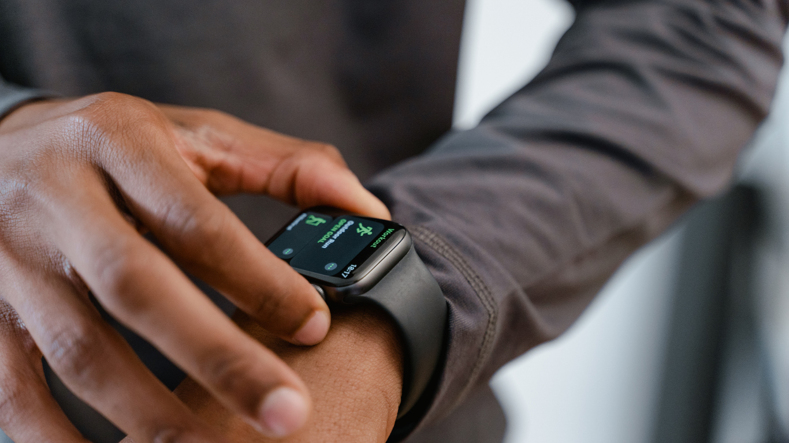

A 30-day measurement program that combines Garmin wearable data with calendar context — so your organization understands how work patterns affect stress, recovery, and sustainable performance.

Trusted by forward-thinking organizations across Europe
Move beyond annual surveys. Get continuous, objective data on how work patterns affect employee stress, recovery, and energy. Build wellbeing programs grounded in physiological evidence — not assumptions.
Start a conversationAdd a data-driven health intelligence layer to your advisory practice. Offer clients objective wearable-based insights that complement traditional risk assessments and workplace health audits.
Explore partnershipUnderstand the health cost of your organization's work culture. Identify systemic issues — back-to-back meetings, insufficient recovery time, unsustainable workloads — before they lead to burnout and attrition.
Talk to our teamAggregate team-level data on heart rate, stress, Body Battery, and HRV patterns — revealing how work structure impacts physiological health across your organization.
See exactly which meeting structures, workday patterns, and schedule habits drive stress or support recovery. No other platform connects calendar data to wearable physiology.
Each team member receives a personal health intelligence report with actionable recommendations — completely private, never shared with management.
An interactive dashboard showing team-level trends, patterns, and risk areas. Drill into meeting impact, workday structure, and recovery metrics — without identifying individuals.
We handle everything: Garmin device provisioning, participant onboarding, guided setup sessions, and data collection. Your team just wears the watch.
A structured debrief for leadership with specific, actionable recommendations on work design, meeting culture, and recovery practices — backed by your team's own data.
Individual health data is never shared with employers, managers, or colleagues. Apex Lab is built around informed consent, data minimization, and GDPR compliance from the ground up — not as an afterthought.
Full compliance with European data protection regulations. Informed consent, data minimization, and right to deletion built in.
Employers only receive anonymized, aggregate insights. No individual health data is ever accessible to leadership or HR.
Every participant signs individual informed consent. Participation is always voluntary. Withdrawal is possible at any time without consequence.
Most organizations measure productivity. Few measure the health cost of producing it. Apex Lab exists to close that gap — giving every professional and every organization the objective data they need to design work that performs without depleting the people doing it.
We believe the future of workplace health isn't annual check-ups or self-reported surveys. It's continuous, contextual, and evidence-based intelligence that connects what you do at work to how your body responds.
Read our approachEvery engagement begins with a conversation. No commitment required.
Start with a pilot. No commitment — just evidence-based clarity for your team.
Get in Touch